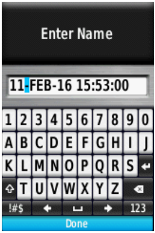
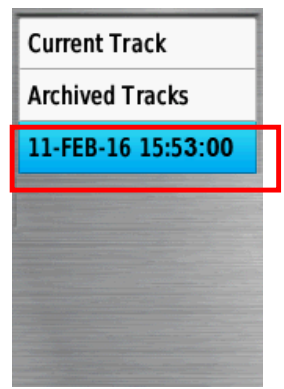
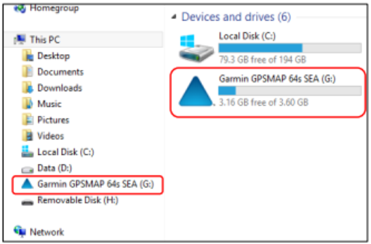

Using GPS
Download page as PDFObjectives:
- Understand parts of GPS
- Understand how to turn on GPS
- Understand how to use GPS
- Understand definition of track and waypoint in GPS
- Understand how to turn on track in GPS
- Understand how to save waypoint in GPS
- Understand how to copy track and waypoint to computer
When doing a field survey, a navigation tool that has a function to record track and point is needed. Global Positioning Syste or GPS is frequently used tool. In this module will explain what is GPS, how to use GPS, and how this survey result using GPS will help to make a map. In this module will explain about using Garmin GPSmap 62s/64s, that is GPS which commonly used for field survey. There are a lot of GPS type that can do the same thing. If you use another type of GPS, you don’t need to worry because they have the same principal. If you don’t have a GPS, you can use OSMTracker as an alternative. You can learn in Using OSMTracker module.
I. Definition and Parts of GPS
Global Positioning System or GPS is a device or satellite-based system that can be used to give information where the users are (globally) on the surface of the earth. Basically, GPS works like handphone, but handphone get the radio signal from telecommunication tower while GPS get the signal from satellite that revolves around the earth. By receiving signals from satellites, a GPS can calculate the location on the surface of the earth. GPS record the location in coordinates format, where there are two number series of coordinates. The first number series shows your position from East or West, or commonly referred to as longitude. The second series of numbers shows your position from north or south, or commonly referred to as latitude position. The coordinates of longitude and latitude are geographical coordinates and each place on earth has different geographical coordinates.

Latitude and longitude illustration
There are parts of GPS Garmin 64s. If you use another type of GPS, you don’t need to worry because basically all GPS have the same principle.

The front of GPS

The back of GPS
Here is the function of the buttons on the GPS:
- Power button is located in the right top. Press the button for a few seconds, then GPS will automatically turn on.
- IN button is for enlarge the map display on GPS screen.
- OUT button is for zoom out the map display on GPS screen.
- FIND button is for open search menu on GPS.
- PAGE button is for access the main page of GPS.
- MARK button is for save waypoints when survey using GPS.
- MENU button is for open the menu in GPS.
- QUIT button is for cancel or back to previous menu.
- ENTER button is for select or ok on the menu that you will choose.
- Navigation button is for navigate on the map screen displayed on GPS.
On the back of the top side of the GPS, there is a port USB to connect to the laptop using USB cable. At the bottom is for AA type battery.
II. Turn On GPS
Global Positioning System or GPS is a satellite-based device, so when you turn on the GPS, make sure you are in outdoors where you can see the sky clearly. GPS can determine your location by receiving signals from satellites, so if you are indoors the GPS will not work. This is the step to turn on the GPS:
- At the top right side of your GPS, press and hold the power button for a few seconds until the screen turns on and show the “Garmin” logo. The process with the Garmin logo is indeed quite long, but you don’t need to worry because GPS is processing the waypoints, tracks, and routes that are on your GPS so it takes longer.

GPS with Garmin logo
- After the GPS turns on, the GPS will automatically show the location where you are, as shown below.

GPS shows your location
III. Using GPS
GPS has many functions that are useful for daily life, such as to show the direction or to measure distances, make maps, and can be used as reference measurements for an area. GPS has a setting that you can change as you want, one of them is to set the brightness of GPS screen. To set the brightness, you can press the power button on the right side once, then on the GPS screen will appear as shown below:
GPS screen display for setting screen brightness
On the top of GPS screen, you can see the information about the day and hour when you using the GPS. Furthermore, there are backlight or brightness level setting that you can set by press the power button once to find the brightness level that suits you, or by pressing the navigation key. There is battery status and GPS signal at the bottom. You can also see how many satellites that your GPS has captured by pressing button Page → Satellite. Then your GPS screen will look like the picture below:

GPS screen display showing satellites that have been captured
On the GPS screen you can see Satellite section, you can see the coordinates where you are, the accuracy of GPS, altitude points, the number of satellites that have been captured by GPS and satellite signals. The picture above shows that your GPS is looking for satellite signals. When it is connected to three or more satellites, the GPS will get your location.
On GPS you can also know the cardinal direction from your location point in Compass option. You can try it by press button Page → Compass.
Di GPS Anda juga dapat mengetahui arah mata angin dari titik lokasi Anda pada pilihan Compass. Anda dapat mencobanya dengan cara menekan tombol Page → Compass. Kompas ini bertujuan untuk menunjukkan arah mata angin pada saat survei. This compass aim is to show the cardinal direction during the survey.

Compass to help as a cardinal direction when surveying
On GPS you can also find out where you are and see places around your location. You can try it by press the button Page → Map. In this map option, you can also see tracks and waypoints if you have started recording tracks and waypoints.

GPS screen display on Map menu
The screen of your GPS may different with the picture above, it’s because the GPS will show according to your current location. If the location of your GPS screen is too large, then you can zoom out by press OUT button on the GPS several times until the screen show the way you want. Otherways, if the location of your GPS screen is too small, then you can enlarge it by pressing IN button on your GPS until the screen displays the way you want.
There are various main menu in GPS, you can press MENU button and the menu options will appear as shown below.

The main menu on the MENU button
IV. Track and Waypoint
GPS record two types of information that are useful for make maps or save coordinate from a place. First, GPS can record the route you’re passed called a track. Second, GPS can record your object point location called waypoint.
a. Track
Track is a direction or path of your trip when it’s start record and will be saved in the form of a location series wherever you move. For example, the track will record your location every one second, or every one meter, and the result will be a series of points showing the path where you have been. Track is very useful for mapping lines or shapes object, such as a road or field.
b. Waypoint
Waypoint is a reference point or set of coordinates that used for navigation purposes or to identify a point on a map. GPS can save your location in GPS memory. When you save a location, the coordinates will be saved with a name. For example, the first waypoint will be named as 001, the second waypoint is 002, and so on. For more details, will be discussed in sub chapter VI, Save Waypoints.
V. Turn On Track Mode
This is the step how to turn on the track mode on GPS:
- Go to Main Menu, choose Setup.

Main Menu display, Setup
- Choose Tracks.

Tracks icon
- On Track Log, change into: Record, Show on Map.

Track Log display
- Make sure your track mode on your GPS is active before you do the survey.
- If you have finished the survey and want to deactivate track, do the method like turn on then select Do Not Record.
Track saved after the field survey is completed. Mostly tracks are saved per day. This is how to save the track:
- Go to Main Menu, choose Track Manager.

Main Menu Display, Track Manager
- Choose Current Track, which is record the track that has just been done.

Current Track display
- Choose Save Track, for save the track.

Save Track Display
- Enter the name track, mostly using date and time of the survey, then select Done.

Enter Name on GPS
- Clear the current track, choose Yes.

Clear the current track
- Make sure the track named is appears. This proves that track survey has been saved successfully.

Saved track display
VI. Save Waypoints
This is the steps for save waypoints:
- Press Mark button on GPS and the GPS screen will appear like this:
Save waypoint on GPS
- Choose Done to save Waypoint.
To see the list of waypoints that you have saved, please go to Main Menu and choose Waypoint Manager. Then the list of waypoints will appear.
Waypoint lists that saved on GPS
To delete one waypoint that you have saved, press Enter on waypoint that you want to delete, then press Menu button and choose Delete.
VII. Copy Track and Waypoint to Computer
The next step is copying the data that has been collected by GPS to computer to be used as a mapping reference. This is the step to copy the GPS data:
- Connect GPS to computer using data cable.
- Make sure the GPS is on.

Connect GPS with data cable to computer
- Go to Garmin GPSMAP directory, then select Garmin → GPX folder.

Computer display after connect with GPS
- Select the data with the description of your survey date (Track and Waypoint) and copy the data to your computer.

The data in GPS after move to computer
SUMMARY
Congratulation! Now you understand how to use GPS, if not you can try to practice save waypoints that you think it’s important. In this module you have learned how to collect waypoints, tracks, and open them in JOSM. You will use the information to add new object in OpenStreetMap.